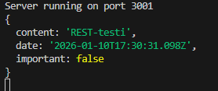
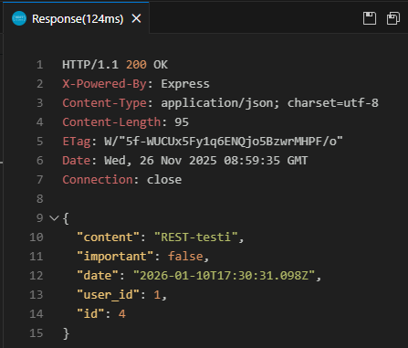
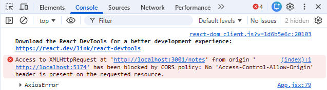

Notes-demo 2 (1/3)
Projekti
Tarkoituksena on tehdä backend joka toimii frontendin ja tietokannan välissä. Käytetään node/express-kirjastoa webbiserversin toteutukseen. Lisämateriaalia löytyy Full Stack open-kurssin osasta 3.
Tee notesdemo-kansion alle uusi kansio notesback, suorita siellä npm init. Asenna tämän jälkeen tarvittavat kirjastot:
npm install express --save npm install mysql2 --save npm install knex --save
Lisää .gitignore jossa
node_modules/ .env dist/ build/
Tee notesback-kansion juureen tiedosto index.js:
const express = require('express')
const app = express()
app.get('/', (req, res) => {
res.send('<h1>Hello World!</h1>')
})
const PORT = 3001
app.listen(PORT, () => {
console.log(`Server running on port ${PORT}`)
})
Kokeile käynnistää webbiserveri:
node index.js
Nyt osoitteessa http://localhost:3001 toimii backend. Jos kokeilet tehdä muutoksia Hello World-tekstiin se ei päivity. Jotta päivitykset tulisivat automaattisesti käyttöön lisää kirjasto nodemon:
npm install nodemon --save-dev
Käynnistä palvelin uudestaan:
npx nodemon index.js
Lisää käynnistyskomento package.json-tiedostoon jotta voit käynnistää sen jatkossa helposti komennolla npm start.
"start": "npx nodemon index.js",
Tietokantayhteys
Aikaisemmin on tehty tietokanta Docker-ympäristöön. Käynnistä Docker ja varmista että tietokanta on olemassa. index.js-tiedostossa määritellään yhteys tietokantaan knex:n avulla:
const options = {
client: 'mysql2',
connection: {
host: '127.0.0.1',
user: 'root',
password: 'mypass123',
database: 'notesdemo_db'
}
}
const knex = require('knex')(options);
Lisää index.js-tiedoston loppuun /GET -kysely jolla haetaan kaikki musitiinpanot:
app.get('/notes', (req, res) => {
knex('notes').select('*')
.then((rows) => {
console.log(rows);
res.json(rows);
})
.catch((err) => {
console.log('SELECT * NOTES failed')
res.status(500).json(
{ error: err }
)
})
})
Testaa näkyvätkö muistiinpanot osoitteessa http://localhost:3001/notes.
Lisää kansio tests REST-testeille. Tee tiedosto notes_get.http joka sisällöksi seuraava HTTP-pyyntö:
GET http://localhost:3001/notes HTTP/1.1
env
Ensimmäisessä esimerkissä tietokantayhteys on määritelty suoraan index.js-tiedostossa. Yhteyden tiedot riippuvat ympäristöstä ja ne tulee erottaa .env-tiedostoon. Luo backendin juureen uusi tiedosto .env:
DB_HOST = localhost DB_USER = root DB_PASS = mypass123 DB_DATABASE = notesdemo_db DB_TYPE = mysql2 DB_PORT = 3306 SECRET = tosisalainensalasanainen PORT = 3001
Kannattaa kopioida .env myös tiedostoon .env-local koska käytössä oleva env-tiedosto ei tallennu GitHub-repoosi.
Asenna käyttöön dotenv
npm install dotenv --save
Luo alikansio utils ja sinne tiedosto config.js. Tiedostossa luetaan .env ja haetaan tiedot muuttujiin. SECRET tulee käyttöön vasta myöhemmin autentikaation myötä.
require('dotenv').config()
let PORT = process.env.PORT
let SECRET = process.env.SECRET
let DATABASE_OPTIONS = {
client: process.env.DB_TYPE,
connection: {
host: process.env.DB_HOST,
user: process.env.DB_USER,
password: process.env.DB_PASS,
database: process.env.DB_DATABASE
}
}
module.exports = {
DATABASE_OPTIONS,
PORT,
SECRET
}
index.js-tiedostossa poista kovakoodattu tietokantayhteys sekä portti. Käytetään config.js-tiedoston lukemia tietoja:
const config = require('./utils/config')
const options = config.DATABASE_OPTIONS;
const PORT = config.PORT;
Debuggausta varten voit kehitysvaiheessa lisätä index.js-tiedostoon rivin knex.on('query', console.log);.
POST
Uuden muistiinpanon lisääminen tapahtuu kutsumalla app.post-metodia:
app.post('/notes', (req, res) => {
const note = req.body;
console.log(note);
})
Lisää tests-kansioon REST-testi muistiinpanon lisäämiselle:
POST http://localhost:3001/notes HTTP/1.1
content-type: application/json
{
"content": "REST-testi",
"date": "2026-01-10T17:30:31.098Z",
"important": false
}
Muistiinpano tulee json-muodossa. Lisaä app.use(express.json()); backendin index.js-tiedostoon. Kun ajat nyt testin niin muistiinpano tulostuu console.log:n avulla konsoliin:

Muistiinpano pitäisi seuraavaksi tallettaa tietokantaan.
const newNote = {
content: note.content,
important: note.important,
date: new Date(note.date),
user_id: 1 /* TÄMÄ KORJATAAN KIRJAUTUMISEN JÄLKEEN */
}
knex('notes').insert(newNote)
.then(id_arr => {
console.log(id_arr);
newNote.id = id_arr[0];
res.json(newNote);
})
Suorita testi ja varmista onnistuuko muistiinpanon tallennus.

Lisää catch-haara .then-osion jälkeen, katso mallia muistiinpanojen hakemisesta. Yleinen virhetilanne ovat puuuttuvat tiedot. Ennen lisäämistä varmistetaan että note sisältää oikeat tiedot. Virhetilanteessa palautetaan 400-virhe.
if (note.content === undefined || note.date === undefined || note.important === undefined) {
return res.status(400).json(
{ error: "check json-data" }
)
}
DELETE
Poistaminen tapahtuu app.delete-metodin avulla. Poistettava id saadaan parametrina.
app.delete('/notes/:id', (req, res) => {
const id = req.params.id;
console.log(id);
})
Lisää REST-testi joka poistaa muistiinpanon.
DELETE http://localhost:3001/notes/4 HTTP/1.1
Varmista tuleeko konsoliin oikea id. Tämän jälkeen lisätään varsinainen poistaminen funktiolle:
knex('notes').where('id', '=', id).del()
.then(status => {
console.log("delete ok")
res.status(204).end();
})
Lisää jälleen catch-haara.
PUT
Muistiinpanon muokkaaminen tapahtuu app.put-metodilla. Pyyntö saa json-tietona päivitettävän muistiinpanon sekä parametrina id:n.
app.put('/notes/:id', (req, res) => {
const id = req.params.id;
const note = req.body;
const updatedNote = {
content: note.content,
important: note.important,
date: new Date(note.date)
}
knex('notes').update(updatedNote).where('id', '=', id)
.then((response) => {
console.log(response)
res.status(204).end();
})
})
Tee REST-testi put_notes.http joka muokkaa muistiinpanoa.
PUT http://localhost:3001/notes/5 HTTP/1.1
Content-Type: application/json
{
"content": "Muutettu muistiinpano",
"date": "2026-01-10T17:30:31.098Z",
"important": true
}
Lisää jälleen catch-haara sekä varmista että note sisältää oikeat tiedot.
Frontend
Voit käynnistää nyt notesdemo:n aiemmin tehdyn frontendin. JSON-serverin sijaan tarkoitus on käyttää backendin välittämiä tietoja. Saat kuitenkin konsoliin CORS-virheilmoituksen (Cross-origin resource sharing):

Ongelma on se, että selaimen JavaScript on portissa 5173 ja tietokannan portti on 3001, niiden Origin on eri. Lisätietoa: Fullstack MOOC: CORS.
Otetaan backendissä käyttöön Noden cors-middleware:
npm install cors --save
Lisää index.js-tiedostoon
const cors = require('cors')
app.use(cors())
Seuraavaksi toteutetaan autentikaatio notesdemoon.